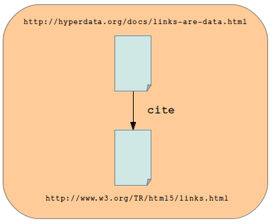

Links are Data
If you've read about search engines then you'll probably have come across Google's PageRank, a value associated with the importance of a page, based on the idea that you can count a link to a page as a vote of support. This is a good example of how links can be used as data, but it's far from being the whole story.
What are Links?
From the HTML5 specification :
Links are a conceptual construct, created bya,area, andlinkelements, that represent a connection between two resources, one of which is the current Document.
The markup for the link above looks like this:
<a href="http://www.w3.org/TR/html5/links.html">HTML5
specification</a>
The current document is
http://hyperdata.org/docs/links-are-data.html, so the connection
that link provides can be expressed visually as:

As it stands, there is a connection between the two pages, but the diagram
doesn't say anything about the nature of the connection. But the link in the
text above is citing the HTML5 spec as the source for the quote. For a human
reader this is obvious, and in fact the markup uses the
<cite> tag to show it's a citation.

Another way of expressing this information would be in a table (as found in databases) :
| cite | |
| http://hyperdata.org/docs/links-are-data.html | http://www.w3.org/TR/html5/links.html |
So...
Links are Data.
Great. So in principle at least I convert existing links into the kind of data my database understands. But how about converting data into links?
There are a few problems here, the example above is a special case:
- the
<cite>element is in the HTML spec - the relationship is between two Web pages
What about relationships that aren't defined in HTML? What if the data is about e.g. products, not Web pages?
These questions can be answered by looking at the Web in a slightly different way, see this short Introduction to RDF.
See also: Evolving the Link (PDF).
Danny Ayers 2012